2018年北京市中考数学试题 原卷解析
北京市2018年中考数学试卷
考生须知 | 1．本试卷共8页，共三道大题，28道小题，满分100分．考试时间120分钟． 2．在试卷和草稿纸上准确填写姓名、准考证号、考场号和座位号． 3．试题答案一律填涂或书写在答题卡上，在试卷上作答无效． 4．在答题卡上，选择题、作图题用2B铅笔作答，其他试题用黑色字迹签字笔作答． 5．考试结束，将本试卷、答题卡和草稿纸一并交回． |
一、选择题（本题共16分，每小题2分）第1-8题均有四个选项，符合题意的选项只有一个．
1．（2.00分）下列几何体中，是圆柱的为（ ）
A．
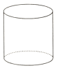
B．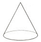
C．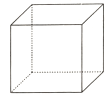
D．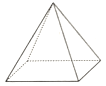
【分析】根据立体图形的定义及其命名规则逐一判断即可．
【解答】解：A、此几何体是圆柱体；
B、此几何体是圆锥体；
C、此几何体是正方体；
D、此几何体是四棱锥；
故选：A．
【点评】本题主要考查立体图形，解题的关键是认识常见的立体图形，如：长方体、正方体、圆柱、圆锥、球、棱柱、棱锥等．能区分立体图形与平面图形，立体图形占有一定空间，各部分不都在同一平面内．
2．（2.00分）实数a，b，c在数轴上的对应点的位置如图所示，则正确的结论是（ ）
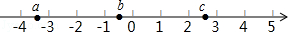
A．|a|＞4B．c﹣b＞0C．ac＞0D．a+c＞0
【分析】本题由图可知，a、b、c绝对值之间的大小关系，从而判断四个选项的对错．
【解答】解：∵﹣4＜a＜﹣3∴|a|＜4∴A不正确；
又∵a＜0 c＞0∴ac＜0∴C不正确；
又∵a＜﹣3 c＜3∴a+c＜0∴D不正确；
又∵c＞0 b＜0∴c﹣b＞0∴B正确；
故选：B．
【点评】本题主要考查了实数的绝对值及加减计算之间的关系，关键是判断正负．
3．（2.00分）方程组
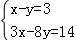
的解为（ ）A．
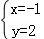
B．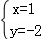
C．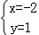
D．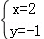
【分析】方程组利用加减消元法求出解即可；
【解答】解：
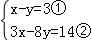
，①×3﹣②得：5y=﹣5，即y=﹣1，
将y=﹣1代入①得：x=2，
则方程组的解为；
故选：D．
【点评】此题考查了解二元一次方程组，熟练掌握运算法则是解本题的关键．
4．（2.00分）被誉为“中国天眼”的世界上最大的单口径球面射电望远镜FAST的反射面总面积相当于35个标准足球场的总面积．已知每个标准足球场的面积为7140m2，则FAST的反射面总面积约为（ ）
A．7.14×103m2B．7.14×104m2C．2.5×105m2D．2.5×106m2
【分析】先计算FAST的反射面总面积，再根据科学记数法表示出来，科学记数法的表示形式为a×10n，其中1≤|a|＜10，n为整数．确定n的值是易错点，由于249900≈250000有6位，所以可以确定n=6﹣1=5．
【解答】解：根据题意得：7140×35=249900≈2.5×105（m2）
故选：C．
【点评】此题考查科学记数法表示较大的数的方法，准确确定a与n值是关键．
5．（2.00分）若正多边形的一个外角是60°，则该正多边形的内角和为（ ）
A．360°B．540°C．720°D．900°
【分析】根据多边形的边数与多边形的外角的个数相等，可求出该正多边形的边数，再由多边形的内角和公式求出其内角和．
【解答】解：该正多边形的边数为：360°÷60°=6，
该正多边形的内角和为：（6﹣2）×180°=720°．
故选：C．
【点评】本题考查了多边形的内角与外角，熟练掌握多边形的外角和与内角和公式是解答本题的关键．
6．（2.00分）如果a﹣b=2
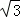
，那么代数式（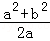
﹣b）•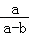
的值为（ ）A．
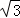
B．2C．3D．4【分析】先将括号内通分，再计算括号内的减法、同时将分子因式分解，最后计算乘法，继而代入计算可得．
【解答】解：原式=（﹣
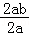
）•=
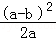
•=
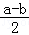
，当a﹣b=2
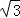
时，原式=
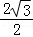
=，故选：A．
【点评】本题主要考查分式的化简求值，解题的关键是熟练掌握分式的混合运算顺序和运算法则．
7．（2.00分）跳台滑雪是冬季奥运会比赛项目之一，运动员起跳后的飞行路线可以看作是抛物线的一部分，运动员起跳后的竖直高度y（单位：m）与水平距离x（单位：m）近似满足函数关系y=ax2+bx+c（a≠0）．如图记录了某运动员起跳后的x与y的三组数据，根据上述函数模型和数据，可推断出该运动员起跳后飞行到最高点时，水平距离为（ ）
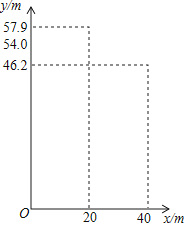
A．10mB．15mC．20mD．22.5m
【分析】将点（0，54.0）、（40，46.2）、（20，57.9）分半代入函数解析式，求得系数的值；然后由抛物线的对称轴公式可以得到答案．
【解答】解：根据题意知，抛物线y=ax2+bx+c（a≠0）经过点（0，54.0）、（40，46.2）、（20，57.9），
则
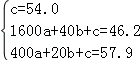
解得
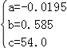
，所以x=﹣
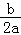
=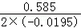
=15（m）．故选：B．
【点评】考查了二次函数的应用，此题也可以将所求得的抛物线解析式利用配方法求得顶点式方程，然后直接得到抛物线顶点坐标，由顶点坐标推知该运动员起跳后飞行到最高点时，水平距离．
8．（2.00分）如图是老北京城一些地点的分布示意图．在图中，分别以正东、正北方向为x轴、y轴的正方向建立平面直角坐标系，有如下四个结论：
①当表示天安门的点的坐标为（0，0），表示广安门的点的坐标为（﹣6，﹣3）时，表示左安门的点的坐标为（5，﹣6）；
②当表示天安门的点的坐标为（0，0），表示广安门的点的坐标为（﹣12，﹣6）时，表示左安门的点的坐标为（10，﹣12）；
③当表示天安门的点的坐标为（1，1），表示广安门的点的坐标为（﹣11，﹣5）时，表示左安门的点的坐标为（11，﹣11）；
④当表示天安门的点的坐标为（1.5，1.5），表示广安门的点的坐标为（﹣16.5，﹣7.5）时，表示左安门的点的坐标为（16.5，﹣16.5）．
上述结论中，所有正确结论的序号是（ ）
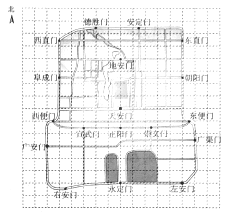
A．①②③B．②③④C．①④D．①②③④
【分析】由天安门和广安门的坐标确定出每格表示的长度，再进一步得出左安门的坐标即可判断．
【解答】解：①当表示天安门的点的坐标为（0，0），表示广安门的点的坐标为（﹣6，﹣3）时，表示左安门的点的坐标为（5，﹣6），此结论正确；
②当表示天安门的点的坐标为（0，0），表示广安门的点的坐标为（﹣12，﹣6）时，表示左安门的点的坐标为（10，﹣12），此结论正确；
③当表示天安门的点的坐标为（1，1），表示广安门的点的坐标为（﹣5，﹣2）时，表示左安门的点的坐标为（11，﹣11），此结论正确；
④当表示天安门的点的坐标为（1.5，1.5），表示广安门的点的坐标为（﹣16.5，﹣7.5）时，表示左安门的点的坐标为（16.5，﹣16.5），此结论正确．
故选：C．
【点评】本题主要考查坐标确定位置，解题的关键是确定原点位置及各点的横纵坐标．
二、填空题（本题共16分，每小题2分）
9．（2.00分）如图所示的网格是正方形网格，∠BAC ＞ ∠DAE．（填“＞”，“=”或“＜”）
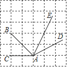
【分析】作辅助线，构建三角形及高线NP，先利用面积法求高线PN=
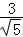
，再分别求∠BAC、∠DAE的正弦，根据正弦值随着角度的增大而增大，作判断．【解答】解：连接NH，BC，过N作NP⊥AD于P，
S△ANH=2×2﹣
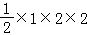
﹣×1×1=AH•NP，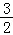
=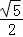
PN，PN=
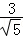
，Rt△ANP中，sin∠NAP=
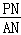
=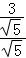
=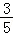
=0.6，Rt△ABC中，sin∠BAC=
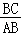
=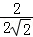
=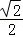
＞0.6，∵正弦值随着角度的增大而增大，
∴∠BAC＞∠DAE，
故答案为：＞．
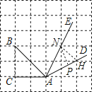
【点评】本题考查了锐角三角函数的增减性，构建直角三角形求角的三角函数值进行判断，熟练掌握锐角三角函数的增减性是关键．
10．（2.00分）若
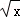
在实数范围内有意义，则实数x的取值范围是 x≥0 ．【分析】根据二次根式有意义的条件可求出x的取值范围．
【解答】解：由题意可知：x≥0．
故答案为：x≥0．
【点评】本题考查二次根式有意义，解题的关键正确理解二次根式有意义的条件，本题属于基础题型．
11．（2.00分）用一组a，b，c的值说明命题“若a＜b，则ac＜bc”是错误的，这组值可以是a= 1 ，b= 2 ，c= ﹣1 ．
【分析】根据题意选择a、b、c的值即可．
【解答】解：当a=1，b=2，c=﹣2时，1＜2，而1×（﹣1）＞2×（﹣1），
∴命题“若a＜b，则ac＜bc”是错误的，
故答案为：1；2；﹣1．
【点评】本题考查了命题与定理，要说明一个命题的正确性，一般需要推理、论证，而判断一个命题是假命题，只需举出一个反例即可．
12．（2.00分）如图，点A，B，C，D在⊙O上，
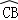
=，∠CAD=30°，∠ACD=50°，则∠ADB= 70° ．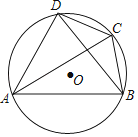
【分析】直接利用圆周角定理以及结合三角形内角和定理得出∠ACB=∠ADB=180°﹣∠CAB﹣∠ABC，进而得出答案．
【解答】解：∵
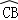
=，∠CAD=30°，∴∠CAD=∠CAB=30°，
∴∠DBC=∠DAC=30°，
∵∠ACD=50°，
∴∠ABD=50°，
∴∠ACB=∠ADB=180°﹣∠CAB﹣∠ABC=180°﹣50°﹣30°﹣30°=70°．
故答案为：70°．
【点评】此题主要考查了圆周角定理以及三角形内角和定理，正确得出∠ABD度数是解题关键．
13．（2.00分）如图，在矩形ABCD中，E是边AB的中点，连接DE交对角线AC于点F，若AB=4，AD=3，则CF的长为
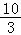
．【分析】根据矩形的性质可得出AB∥CD，进而可得出∠FAE=∠FCD，结合∠AFE=∠CFD（对顶角相等）可得出△AFE∽△CFD，利用相似三角形的性质可得出
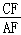
=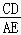
=2，利用勾股定理可求出AC的长度，再结合CF=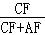
•AC，即可求出CF的长．【解答】解：∵四边形ABCD为矩形，
∴AB=CD，AD=BC，AB∥CD，
∴∠FAE=∠FCD，
又∵∠AFE=∠CFD，
∴△AFE∽△CFD，
∴
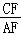
=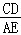
=2．∵AC=
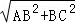
=5，∴CF=•AC=×5=．
故答案为：．
【点评】本题考查了相似三角形的判定与性质、矩形的性质以及勾股定理，利用相似三角形的性质找出CF=2AF是解题的关键．
14．（2.00分）从甲地到乙地有A，B，C三条不同的公交线路．为了解早高峰期间这三条线路上的公交车从甲地到乙地的用时情况，在每条线路上随机选取了500个班次的公交车，收集了这些班次的公交车用时（单位：分钟）的数据，统计如下：
公交车用时 公交车用时的频数 线路 | 30≤t≤35 | 35＜t≤40 | 40＜t≤45 | 45＜t≤50 | 合计 |
A | 59 | 151 | 166 | 124 | 500 |
B | 50 | 50 | 122 | 278 | 500 |
C | 45 | 265 | 167 | 23 | 500 |
早高峰期间，乘坐 C （填“A”，“B”或“C”）线路上的公交车，从甲地到乙地“用时不超过45分钟”的可能性最大．
【分析】分别计算出用时不超过45分钟的可能性大小即可得．
【解答】解：∵A线路公交车用时不超过45分钟的可能性为=0.752，
B线路公交车用时不超过45分钟的可能性为=0.444，
C线路公交车用时不超过45分钟的可能性为=0.954，
∴C线路上公交车用时不超过45分钟的可能性最大，
故答案为：C．
【点评】本题主要考查可能性的大小，解题的关键是掌握频数估计概率思想的运用．
15．（2.00分）某公园划船项目收费标准如下：
船型 | 两人船（限乘两人） | 四人船（限乘四人） | 六人船（限乘六人） | 八人船（限乘八人） |
每船租金（元/小时） | 90 | 100 | 130 | 150 |
某班18名同学一起去该公园划船，若每人划船的时间均为1小时，则租船的总费用最低为 390 元．
【分析】分四类情况，分别计算即可得出结论．
【解答】解：∵共有18人，
当租两人船时，∴18÷2=9（艘），∵每小时90元，∴租船费用为90×9=810元，
当租四人船时，∵18÷4=4余2人，∴要租4艘四人船和1艘两人船，∵四人船每小时100元，
∴租船费用为100×4+90=490元，
当租六人船时，∵18÷6=3（艘），∵每小时130元，∴租船费用为130×3=390元，
当租八人船时，∵18÷8=2余2人，∴要租2艘八人船和1艘两人船，∵8人船每小时150元，
∴租船费用为150×2+90=390元，而810＞490＞390，
∴租3艘六人船或2艘八人船1艘两人船费用最低是390元，
故答案为：390．
【点评】此题主要考查了有理数的运算，用分类讨论的思想解决问题是解本题的关键．
16．（2.00分）2017年，部分国家及经济体在全球的创新综合排名、创新产出排名和创新效率排名情况如图所示，中国创新综合排名全球第22，创新效率排名全球第 3 ．
【分析】两个排名表相互结合即可得到答案．
【解答】解：根据中国创新综合排名全球第22，在坐标系中找到对应的中国创新产出排名为第11，再根据中国创新产出排名为第11在另一排名中找到创新效率排名为第3
故答案为：3
【点评】本题考查平面直角坐标系中点的坐标确定问题，解答时注意根据具体题意确定点的位置和坐标．
三、解答题（本题共68分，第17-22题，每小题5分，第23-26题，每小题5分，第27，28题，每小题5分）解答应写出文字说明、演算步骤或证明过程．
17．（5.00分）下面是小东设计的“过直线外一点作这条直线的平行线”的尺规作图过程．
已知：直线l及直线l外一点P．
求作：直线PQ，使得PQ∥l．
作法：如图，
①在直线l上取一点A，作射线PA，以点A为圆心，AP长为半径画弧，交PA的延长线于点B；
②在直线l上取一点C（不与点A重合），作射线BC，以点C为圆心，CB长为半径画弧，交BC的延长线于点Q；
③作直线PQ．所以直线PQ就是所求作的直线．
根据小东设计的尺规作图过程，
（1）使用直尺和圆规，补全图形；（保留作图痕迹）
（2）完成下面的证明．
证明：∵AB= AP ，CB= CQ ，
∴PQ∥l（ 三角形中位线定理 ）（填推理的依据）．
【分析】（1）根据题目要求作出图形即可；
（2）利用三角形中位线定理证明即可；
【解答】（1）解：直线PQ如图所示；
（2）证明：∵AB=AP，CB=CQ，
∴PQ∥l（三角形中位线定理）．
故答案为：AP，CQ，三角形中位线定理；
【点评】本题考查作图﹣复杂作图，平行线的判定和性质等知识，解题的关键是灵活运用所学知识解决问题，属于中考常考题型．
18．（5.00分）计算4sin45°+（π﹣2）0﹣+|﹣1|
【分析】直接利用特殊角的三角函数值以及零指数幂的性质和二次根式的性质分别化简得出答案．
【解答】解：原式=4×+1﹣3+1
=﹣+2．
【点评】此题主要考查了实数运算，正确化简各数是解题关键．
19．（5.00分）解不等式组：
【分析】先求出每个不等式的解集，再求出不等式组的解集即可．
【解答】解：
∵解不等式①得：x＞﹣2，
解不等式②得：x＜3，
∴不等式组的解集为﹣2＜x＜3．
【点评】本题考查了解一元一次不等式组，能根据不等式的解集得出不等式组的解集是解此题的关键．
20．（5.00分）关于x的一元二次方程ax2+bx+1=0．
（1）当b=a+2时，利用根的判别式判断方程根的情况；
（2）若方程有两个相等的实数根，写出一组满足条件的a，b的值，并求此时方程的根．
【分析】（1）计算判别式的值得到△=a2+4，则可判断△＞0，然后根据判别式的意义判断方程根的情况；
（2）利用方程有两个相等的实数根得到△=b2﹣4a=0，设b=2，a=1，方程变形为x2+2x+1=0，然后解方程即可．
【解答】解：（1）a≠0，
△=b2﹣4a=（a+2）2﹣4a=a2+4a+4﹣4a=a2+4，
∵a2＞0，
∴△＞0，
∴方程有两个不相等的实数根；
（2）∵方程有两个相等的实数根，
∴△=b2﹣4a=0，
若b=2，a=1，则方程变形为x2+2x+1=0，解得x1=x2=﹣1．
【点评】本题考查了根的判别式：一元二次方程ax2+bx+c=0（a≠0）的根与△=b2﹣4ac有如下关系：当△＞0时，方程有两个不相等的实数根；当△=0时，方程有两个相等的实数根；当△＜0时，方程无实数根．
21．（5.00分）如图，在四边形ABCD中，AB∥DC，AB=AD，对角线AC，BD交于点O，AC平分∠BAD，过点C作CE⊥AB交AB的延长线于点E，连接OE．
（1）求证：四边形ABCD是菱形；
（2）若AB=，BD=2，求OE的长．
【分析】（1）先判断出∠OAB=∠DCA，进而判断出∠DAC=∠DAC，得出CD=AD=AB，即可得出结论；
（2）先判断出OE=OA=OC，再求出OB=1，利用勾股定理求出OA，即可得出结论．
【解答】解：（1）∵AB∥CD，
∴∠OAB=∠DCA，
∵AC为∠DAB的平分线，
∴∠OAB=∠DAC，
∴∠DCA=∠DAC，
∴CD=AD=AB，
∵AB∥CD，
∴四边形ABCD是平行四边形，
∵AD=AB，
∴▱ABCD是菱形；
（2）∵四边形ABCD是菱形，
∴OA=OC，BD⊥AC，∵CE⊥AB，
∴OE=OA=OC，
∵BD=2，
∴OB=BD=1，
在Rt△AOB中，AB=，OB=1，
∴OA==2，
∴OE=OA=2．
【点评】此题主要考查了菱形的判定和性质，平行四边形的判定和性质，角平分线的定义，勾股定理，判断出CD=AD=AB是解本题的关键．
22．（5.00分）如图，AB是⊙O的直径，过⊙O外一点P作⊙O的两条切线PC，PD，切点分别为C，D，连接OP，CD．
（1）求证：OP⊥CD；
（2）连接AD，BC，若∠DAB=50°，∠CBA=70°，OA=2，求OP的长．
【分析】（1）先判断出Rt△ODP≌Rt△OCP，得出∠DOP=∠COP，即可得出结论；
（2）先 求出∠COD=60°，得出△OCD是等边三角形，最后用锐角三角函数即可得出结论．
【解答】解：（1）连接OC，OD，
∴OC=OD，
∵PD，PC是⊙O的切线，
∵∠ODP=∠OCP=90°，
在Rt△ODP和Rt△OCP中，，
∴Rt△ODP≌Rt△OCP，
∴∠DOP=∠COP，
∵OD=OC，
∴OP⊥CD；
（2）如图，连接OD，OC，
∴OA=OD=OC=OB=2，
∴∠ADO=∠DAO=50°，∠BCO=∠CBO=70°，
∴∠AOD=80°，∠BOC=40°，
∴∠COD=60°，
∵OD=OC，
∴△COD是等边三角形，
由（1）知，∠DOP=∠COP=30°，
在Rt△ODP中，OP==．
【点评】此题主要考查了等腰三角形的性质，切线的性质，全等三角形的判定和性质，锐角三角函数，正确作出辅助线是解本题的关键．
23．（6.00分）在平面直角坐标系xOy中，函数y=（x＞0）的图象G经过点A（4，1），直线l：y=+b与图象G交于点B，与y轴交于点C．
（1）求k的值；
（2）横、纵坐标都是整数的点叫做整点．记图象G在点A，B之间的部分与线段OA，OC，BC围成的区域（不含边界）为w．
①当b=﹣1时，直接写出区域W内的整点个数；
②若区域W内恰有4个整点，结合函数图象，求b的取值范围．
【分析】（1）把A（4，1）代入y=中可得k的值；
（2）直线OA的解析式为：y=x，可知直线l与OA平行，
①将b=﹣1时代入可得：直线解析式为y=x﹣1，画图可得整点的个数；
②分两种情况：直线l在OA的下方和上方，
画图计算边界时点b的值，可得b的取值．
【解答】解：（1）把A（4，1）代入y=得k=4×1=4；
（2）①当b=﹣1时，直线解析式为y=x﹣1，
解方程=x﹣1得x1=2﹣2（舍去），x2=2+2，则B（2+2，），
而C（0，﹣1），
如图1所示，区域W内的整点有（1，0），（2，0），（3，0），有3个；
②如图2，直线l在OA的下方时，当直线l：y=+b过（1，﹣1）时，b=﹣，
且经过（5，0），
∴区域W内恰有4个整点，b的取值范围是﹣≤b＜﹣1．
如图3，直线l在OA的上方时，
∵点（2，2）在函数y=（x＞0）的图象G，
当直线l：y=+b过（1，2）时，b=，
当直线l：y=+b过（1，3）时，b=，
∴区域W内恰有4个整点，b的取值范围是＜b≤．
综上所述，区域W内恰有4个整点，b的取值范围是﹣≤b＜﹣1或＜b≤．
【点评】本题考查了新定义和反比例函数与一次函数的交点问题：求反比例函数与一次函数的交点坐标，把两个函数关系式联立成方程组求解，本题理解整点的定义是关键，并利用数形结合的思想．
24．（6.00分）如图，Q是与弦AB所围成的图形的内部的一定点，P是弦AB上一动点，连接PQ并延长交于点C，连接AC．已知AB=6cm，设A，P两点间的距离为xcm，P，C两点间的距离为y1cm，A，C两点间的距离为y2cm．
小腾根据学习函数的经验，分别对函数y1，y2随自变量x的变化而变化的规律进行了探究．
下面是小腾的探究过程，请补充完整：
（1）按照下表中自变量x的值进行取点、画图、测量，分别得到了y1，y2与x的几组对应值；
x/cm | 0 | 1 | 2 | 3 | 4 | 5 | 6 |
y1/cm | 5.62 | 4.67 | 3.76 | 3 | 2.65 | 3.18 | 4.37 |
y2/cm | 5.62 | 5.59 | 5.53 | 5.42 | 5.19 | 4.73 | 4.11 |
（2）在同一平面直角坐标系xOy中，描出补全后的表中各组数值所对应的点（x，y1），（x，y2），并画出函数y1，y2的图象；
（3）结合函数图象，解决问题：当△APC为等腰三角形时，AP的长度约为 3或4.91或5.77 cm．
【分析】（1）利用圆的半径相等即可解决问题；
（2）利用描点法画出图象即可．
（3）图中寻找直线y=x与两个函数的交点的横坐标以及y1与y2的交点的横坐标即可；
【解答】解：（1）当x=3时，PA=PB=PC=3，
∴y1=3，
故答案为3．
（2）函数图象如图所示：
（3）观察图象可知：当x=y，即当PA=PC或PA=AC时，x=3或4.91，
当y1=y2时，即PC=AC时，x=5.77，
综上所述，满足条件的x的值为3或4.91或5.77．
故答案为3或4.91或5.77．
【点评】本题考查动点问题函数图象、圆的有关知识，解题的关键是学会利用图象法解决问题，属于中考常考题型．
25．（6.00分）某年级共有300名学生．为了解该年级学生A，B两门课程的学习情况，从中随机抽取60名学生进行测试，获得了他们的成绩（百分制），并对数据（成绩）进行整理、描述和分析．下面给出了部分信息．
a．A课程成绩的频数分布直方图如下（数据分成6组：40≤x＜50，50≤x＜60，60≤x＜70，70≤x＜80，80≤x＜90，90≤x≤100）：
b．A课程成绩在70≤x＜80这一组的是：70 71 71 71 76 76 77 78 78.5 78.5 79 79 79 79.5
c．A，B两门课程成绩的平均数、中位数、众数如下：
课程 | 平均数 | 中位数 | 众数 |
A | 75.8 | m | 84.5 |
B | 72.2 | 70 | 83 |
根据以上信息，回答下列问题：
（1）写出表中m的值；
（2）在此次测试中，某学生的A课程成绩为76分，B课程成绩为71分，这名学生成绩排名更靠前的课程是 B （填“A“或“B“），理由是 该学生的成绩小于A课程的中位数，而大于B课程的中位数 ，
（3）假设该年级学生都参加此次测试，估计A课程成绩跑过75.8分的人数．
【分析】（1）先确定A课程的中位数落在第4小组，再由此分组具体数据得出第30、31个数据的平均数即可；
（2）根据两个课程的中位数定义解答可得；
（3）用总人数乘以样本中超过75.8分的人数所占比例可得．
【解答】解：（1）∵A课程总人数为2+6+12+14+18+8=60，
∴中位数为第30、31个数据的平均数，而第30、31个数据均在70≤x＜80这一组，
∴中位数在70≤x＜80这一组，
∵70≤x＜80这一组的是：70 71 71 71 76 76 77 78 78.5 78.5 79 79 79 79.5，
∴A课程的中位数为=78.75，即m=78.75；
（2）∵该学生的成绩小于A课程的中位数，而大于B课程的中位数，
∴这名学生成绩排名更靠前的课程是B，
故答案为：B、该学生的成绩小于A课程的中位数，而大于B课程的中位数．
（3）估计A课程成绩跑过75.8分的人数为300×=180人．
【点评】本题主要考查频数分布直方图、中位数及样本估计总体，解题的关键是根据直方图得出解题所需数据及中位数的定义和意义、样本估计总体思想的运用．
26．（6.00分）在平面直角坐标系xOy中，直线y=4x+4与x轴，y轴分别交于点A，B，抛物线y=ax2+bx﹣3a经过点A，将点B向右平移5个单位长度，得到点C．
（1）求点C的坐标；
（2）求抛物线的对称轴；
（3）若抛物线与线段BC恰有一个公共点，结合函数图象，求a的取值范围．
【分析】（1）根据坐标轴上点的坐标特征可求点B的坐标，根据平移的性质可求点C的坐标；
（2）根据坐标轴上点的坐标特征可求点A的坐标，进一步求得抛物线的对称轴；
（3）结合图形，分三种情况：①a＞0；②a＜0，③抛物线的顶点在线段BC上；进行讨论即可求解．
【解答】解：（1）与y轴交点：令x=0代入直线y=4x+4得y=4，
∴B（0，4），
∵点B向右平移5个单位长度，得到点C，
∴C（5，4）；
（2）与x轴交点：令y=0代入直线y=4x+4得x=﹣1，
∴A（﹣1，0），
∵点B向右平移5个单位长度，得到点C，
将点A（﹣1，0）代入抛物线y=ax2+bx﹣3a中得0=a﹣b﹣3a，即b=﹣2a，
∴抛物线的对称轴x=﹣=﹣=1；
（3）∵抛物线y=ax2+bx﹣3a经过点A（﹣1，0）且对称轴x=1，
由抛物线的对称性可知抛物线也一定过A的对称点（3，0），
①a＞0时，如图1，
将x=0代入抛物线得y=﹣3a，
∵抛物线与线段BC恰有一个公共点，
∴﹣3a＜4，
a＞﹣，
将x=5代入抛物线得y=12a，
∴12a≥4，
a≥，
∴a≥；
②a＜0时，如图2，
将x=0代入抛物线得y=﹣3a，
∵抛物线与线段BC恰有一个公共点，
∴﹣3a＞4，
a＜﹣；
③当抛物线的顶点在线段BC上时，则顶点为（1，4），如图3，
将点（1，4）代入抛物线得4=a﹣2a﹣3a，
解得a=﹣1．
综上所述，a≥或a＜﹣或a=﹣1．
【点评】本题考查了待定系数法求函数解析式、二次函数的性质以及解一元一次不等式，解题的关键是熟练掌握解一元一次方程，待定系数法求抛物线解析式．本题属于中档题，难度不大，但涉及知识点较多，需要对二次函数足够了解才能快捷的解决问题．
27．（7.00分）如图，在正方形ABCD中，E是边AB上的一动点（不与点A、B重合），连接DE，点A关于直线DE的对称点为F，连接EF并延长交BC于点G，连接DG，过点E作EH⊥DE交DG的延长线于点H，连接BH．
（1）求证：GF=GC；
（2）用等式表示线段BH与AE的数量关系，并证明．

【分析】（1）如图1，连接DF，根据对称得：△ADE≌△FDE，再由HL证明Rt△DFG≌Rt△DCG，可得结论；
（2）证法一：如图2，作辅助线，构建AM=AE，先证明∠EDG=45°，得DE=EH，证明△DME≌△EBH，则EM=BH，根据等腰直角△AEM得：EM= AE，得结论；
AE，得结论；
证法二：如图3，作辅助线，构建全等三角形，证明△DAE≌△ENH，得AE=HN，AD=EN，再说明△BNH是等腰直角三角形，可得结论．
【解答】证明：（1）如图1，连接DF，
∵四边形ABCD是正方形，
∴DA=DC，∠A=∠C=90°，
∵点A关于直线DE的对称点为F，
∴△ADE≌△FDE，
∴DA=DF=DC，∠DFE=∠A=90°，
∴∠DFG=90°，
在Rt△DFG和Rt△DCG中，
∵ ，
，
∴Rt△DFG≌Rt△DCG（HL），
∴GF=GC；
（2）BH=AE，理由是：
证法一：如图2，在线段AD上截取AM，使AM=AE，
∵AD=AB，
∴DM=BE，
由（1）知：∠1=∠2，∠3=∠4，
∵∠ADC=90°，
∴∠1+∠2+∠3+∠4=90°，
∴2∠2+2∠3=90°，
∴∠2+∠3=45°，
即∠EDG=45°，
∵EH⊥DE，
∴∠DEH=90°，△DEH是等腰直角三角形，
∴∠AED+∠BEH=∠AED+∠1=90°，DE=EH，
∴∠1=∠BEH，
在△DME和△EBH中，
∵ ，
，
∴△DME≌△EBH，
∴EM=BH，
Rt△AEM中，∠A=90°，AM=AE，
∴EM= AE，
AE，
∴BH=AE；
证法二：如图3，过点H作HN⊥AB于N，
∴∠ENH=90°，
由方法一可知：DE=EH，∠1=∠NEH，
在△DAE和△ENH中，
∵ ，
，
∴△DAE≌△ENH，
∴AE=HN，AD=EN，
∵AD=AB，
∴AB=EN=AE+BE=BE+BN，
∴AE=BN=HN，
∴△BNH是等腰直角三角形，
∴BH=HN=AE．


【点评】本题考查了正方形的性质，全等三角形的判定定理和性质定理，对称的性质，等腰直角三角形的性质等知识，解决本题的关键是利用正方形的性质得到相等的边和相等的角，证明三角形全等，作出辅助线也是解决本题的关键．
28．（7.00分）对于平面直角坐标系xOy中的图形M，N，给出如下定义：P为图形M上任意一点，Q为图形N上任意一点，如果P，Q两点间的距离有最小值，那么称这个最小值为图形M，N间的“闭距离“，记作d（M，N）．
已知点A（﹣2，6），B（﹣2，﹣2），C（6，﹣2）．
（1）求d（点O，△ABC）；
（2）记函数y=kx（﹣1≤x≤1，k≠0）的图象为图形G．若d（G，△ABC）=1，直接写出k的取值范围；
（3）⊙T的圆心为T（t，0），半径为1．若d（⊙T，△ABC）=1，直接写出t的取值范围．
【分析】（1）根据点A、B、C三点的坐标作出△ABC，利用“闭距离”的定义即可得；
（2）由题意知y=kx在﹣1≤x≤1范围内函数图象为过原点的线段，再分别求得经过（1，﹣1）和（﹣1，﹣1）时k的值即可得；
（3）分⊙T在△ABC的左侧、内部和右侧三种情况，利用“闭距离”的定义逐一判断即可得．
【解答】解：（1）如图所示，点O到△ABC的距离的最小值为2，
∴d（点O，△ABC）=1；
（2）y=kx（k≠0）经过原点，在﹣1≤x≤1范围内，函数图象为线段，
当y=kx（﹣1≤x≤1，k≠0）经过（1，﹣1）时，k=﹣1，此时d（G，△ABC）=1；
当y=kx（﹣1≤x≤1，k≠0）经过（﹣1，﹣1）时，k=1，此时d（G，△ABC）=1；
∴﹣1≤k≤1，
∵k≠0，
∴﹣1≤k≤1且k≠0；
（3）⊙T与△ABC的位置关系分三种情况：
①当⊙T在△ABC的左侧时，由d（⊙T，△ABC）=1知此时t=﹣4；
②当⊙T在△ABC内部时，
当点T与原点重合时，d（⊙T，△ABC）=1，知此时t=0；
当点T位于T3位置时，由d（⊙T，△ABC）=1知T3M=2，
∵AB=BC=8、∠ABC=90°，
∴∠C=∠T3DM=45°，
则T3D===2，
∴t=4﹣2，
故此时0≤t≤4﹣2；
③当⊙T在△ABC右边时，由d（⊙T，△ABC）=1知T4N=2，
∵∠T4DC=∠C=45°，
∴T4D===2，
∴t=4+2；
综上，t=﹣4或0≤t≤4﹣2或t=4+2．
【点评】本题主要考查圆的综合问题，解题的关键是理解并掌握“闭距离”的定义与直线与圆的位置关系和分类讨论思想的运用．